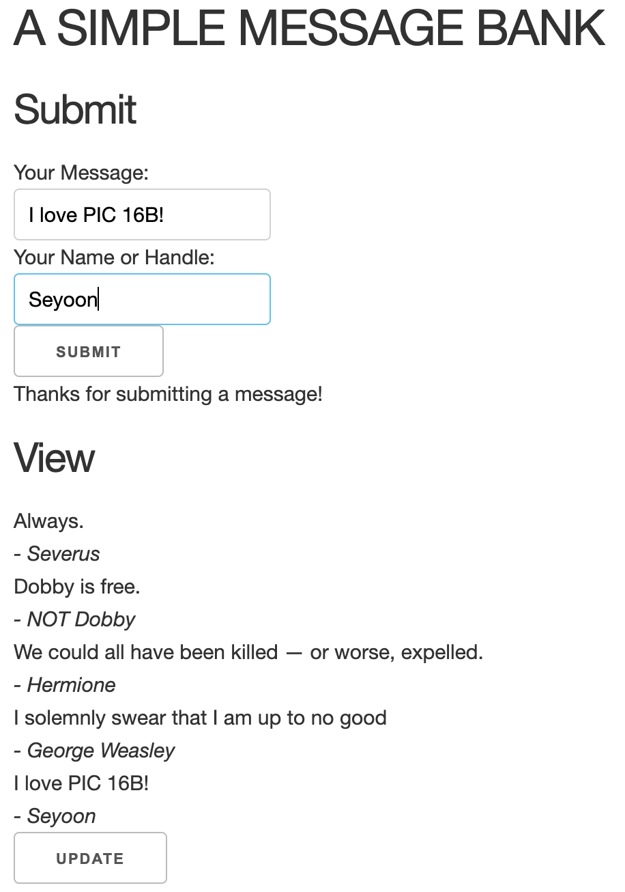

In this blog post, you will create a simple webapp using Dash by Plotly and describe how you did it. The skills you will need are:
- Dash fundamentals, including callbacks.
- Database skills, including adding items to databases and displaying them.
You are not required to deploy your app to the internet, although you are certainly welcome to do so if you wish.
Overview
The app you’re going to build is a simple message bank. It should do two things:
- Allow the user to submit messages to the bank.
- Allow the user to view a sample of the messages currently stored in the bank.
Additionally, you should style your app to look attractive and interesting! I encourage you to get creative on this.
Your Jupyter Notebook will contain all the code for the app so that when it is exported as a .py file, it can run a webapp with the command python <your filename>.py. It should also contain several screencaps from the functioning of your app, as well as a discussion of the Python functions you implemented to create your app.
You are free to (and indeed encouraged) build on any of the examples from class, as well as any other resources you are able to find. The lecture materials are good starting points.
Instructions
1. Enable Submissions
First, create a submit functionality with three user interface elements:
- A text box for submitting a message.
- A text box for submitting the name of the user.
- A “submit” button.
Now, write two Python functions for database management in the app.
get_message_db()should handle creating the database of messages.- Check whether there is a database called
message_dbdefined in the global scope. If not, then connect to that database and assign it to the global variablemessage_db. To do this last step, write a line likemessage_db = sqlite3.connect("messages_db.sqlite") - Check whether a table called
messagesexists inmessage_db, and create it if not. For this purpose, the SQL commandCREATE TABLE IF NOT EXISTSis helpful. Give the table ahandlecolumn (text) and amessagecolumn (text). - Return the connection
message_db. - Here is a helpful starter code:
message_db = None def get_message_db(): # write some helpful comments here global message_db if message_db: return message_db else: message_db = sqlite3.connect("messages_db.sqlite", check_same_thread=False) cmd = '' # replace this with your SQL query cursor = message_db.cursor() cursor.execute(cmd) return message_db- Check whether there is a database called
- The function
insert_message(handle, message)should handle inserting a user message into the database of messages.- Using a cursor, insert the message into the
messagedatabase. Remember that you’ll need to provide the handle and the message itself. You’ll need to write a SQL command to perform the insertion.
- Note: when working directly with SQL commands, it is necessary to run
db.commit()after inserting a row intodbin order to ensure that your row insertion has been saved. - A column called
rowidis automatically generated by default. It gives an integer index to each row you add to the database. - Close the database connection within the function!
- Using a cursor, insert the message into the
- Finally, write a callback function
submit()to update the components. Maybe it would be nice to add a small note thanking the user for their submission and print an error message if it failed.- Extract the
handleand themessagefrom the components. You’ll need to ensure that your callback deals with the user input by appropriately specifying the property of the input elements. - You might want to use the keyword argment
prevent_initial_call.
- Extract the
2. Viewing Random Submissions
Write a function called random_messages(n), which will return a collection of n random messages from the message_db, or fewer if necessary. This StackOverflow post might help. Don’t forget to close the database connection within the function!
Next, write a new component to display the messages extracted from random_messages().
Finally, write a callback function view() to display random messages. This function should first call random_messages() to grab some random messages (I chose a cap of 5), and then display these messages using a loop. It should be triggered when the “update” button is pressed.
3. Customize Your App
Here’s an example of the app so far:

Let’s customize this app by changing styles! At least, you should
- Incorporate a non-default font.
- Use color in some way.
Feel free to add CSS or other stylesheets in order to give your app a personal feel. Your app should be a lot more colorful than the screencaps shown on this page!
4. The Blog Post
For your blog post, write a tutorial describing how you constructed your webpage. You should include:
- Separate code blocks and explanations for each of the Python functions you used to build your app (there should be at least five of them).
- Your report must include one or two screencaps:
- You should show an example of a user submitting a message. In the handle field, please use either your name or your GitHub handle.
- You should show an example of a user viewing submitted messages. Show at least two messages, one of which is the message you submitted in the previous screencap. This message should show your name or GitHub handle.
- Keep in mind that you are writing a single website.
Specifications
Format
- There is no autograder for this homework.
- For
codesection, please submit thezipfile containing all the files you wrote.- This should at least include
hw3.ipynb,app.py(must be executable, if you directly convert your Jupyter notebook, remove the part from the first raw cell!), and the screencaps. - If you used any other file (e.g., image or css style file), please also include them.
- This should at least include
- For the
pdfsection, convert your blog post preview to a pdf file, as usual.
Coding Problem
- Each of the required functions is implemented in a logical way.
- Each of the required functions appears to successfully achieve the required task.
- Callback functions also include the appropriate additional functions. For example, the callback function
view()should callrandom_messages(). - Both “submit” and “view” part should be in a single webpage.
- Some styling should be done; it should be different from what is shown in the class. You should change font and color to be used. Extra credits for a more sophiscasted and visually appealing approach.
Style and Documentation
- Helpful comments are supplied throughout the code. Docstrings are not required in this homework, and you don’t need to show the testing of
get_message_db(),insert_message(), andrandom_messages()outside the webapp as well.
Writing
- The overall report is written in engaging and unambiguous English prose. There is written explanations throughout the post, such that a student with the knowledge of the first five weeks of this course could learn to perform the demonstrated tasks by reading the post.
- Each block of code has a clearly explained purpose.
- The blog post is organized into clearly delimited sections using markdown headers (#), making it easier for the reader to navigate.
- The blog post includes the required screencaps demonstrating the submission and viewing pages of the app.
- The blog post includes a discussion of all Python functions used to create the app. This should include, at minimum,
get_message_db(),insert_message(),random_messages(),submit(), andview().
Image from Vector image by VectorStock / iconsgate